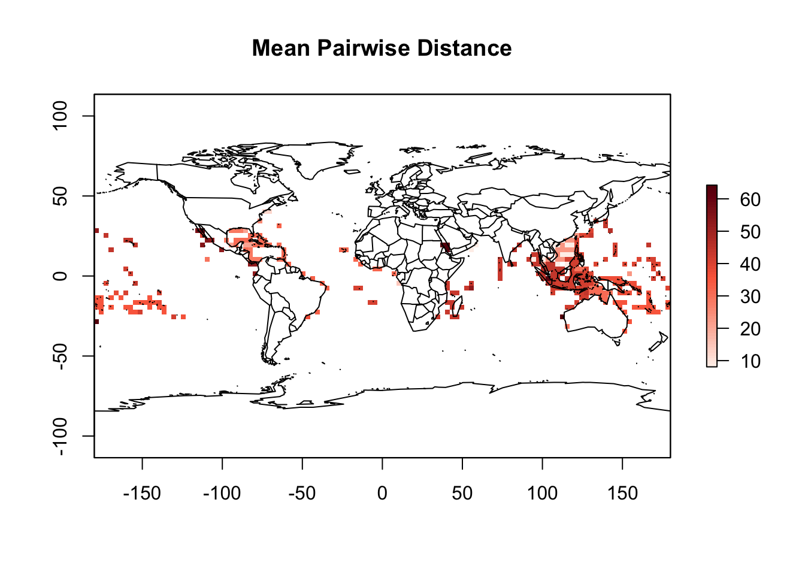

Para a atividade 4, partiremos dos primeiros passos da atividade 1,
mas com algumas modificações na escala do mapa (global desta vez). Para
tal, bastar realizar estes primeiros passos rodando este
chunck de código abaixo.
library(letsR)
library(tidyverse)
# Importanto o shapefile
borb <- rgdal::readOGR(dsn = "data/Chaetodontidae_NewWorld.shp")## OGR data source with driver: ESRI Shapefile
## Source: "/Users/cesarcordeiro/git/macroecologia-UENF_2022/data/Chaetodontidae_NewWorld.shp", layer: "Chaetodontidae_NewWorld"
## with 29 features
## It has 27 fields
## Integer64 fields read as strings: id_no# Criando raster
borb_maps <- lets.presab(borb, resol = 3,
xmn = borb@bbox[1], xmx = borb@bbox[3], # America range
ymn = borb@bbox[2], ymx = borb@bbox[4], # America range
cover = 0.01,
remove.cells = FALSE)
# Criando matrix de presença e ausência
borb_pa <- borb_maps$Presence_and_Absence_MatrixA manipulação e tratamento de dados espaciais tipo .shp exigem um
profundo conhecimento sobre os dados e a forma como eles são
armazenados. Se quiserem saber mais sobre como utilizar o R para tratar
este tipo de dados, recorram a livros como Applied spatial data analysis
with R (Bivand et al. 2013) ou An introduction to R for spatial analysis
and mapping (Brunsdown & Comber 2015). Felizmente, existe um pacote
chamado letsR (Vilela & Villalobos 2015) que possui uma grande
variedade de ferramentas úteis para macroecólogos. Nós já instalamos e
carregamos este pacote no início da aula e podemos utilizar suas funções
para fazer mais alguns mapas. Vamos utilizar a função lets.presab para
criar um raster (i.e., arquivo tipo imagem que armazena informações em
cada um de seus pixels; digite ‘arquivo raster’ no Google para mais
detalhes) sumarizando a riqueza de espécie de peixes borboletas na
América do Sul. Neste caso, a resolução do nosso arquivo de raster será
de 3x3 graus (i.e., cada pixel ou célula tem tamanho 3 por 3 graus);
mude a resol para valores 4 ou 5 e você verá a diferença na figura
final. Já o argumento cover garante que somente pixels que tenham mais
de 1% de sua área sobre do continente sejam mantidos (mude estes valores
e veja a diferença no mapa resultante). Como nosso objetivo é um mapa da
América, as coordenadas limites foram definidas para realizar o
exercício somente ao longo da extensão desejada (argumentos xmn, xmx,
ymn e ymx da função lets.presab).
Para entendermos melhor como podemos utilizar diferentes informações em larga escala, vamos proceder com um exercício sobre diversidade filogenética. Muito da macroecologia tem sido feito no sentido de incorporar informações filogenéticas às análises espaciais/geográficas. Desta forma, os padrões que analisamos em larga escala contém informações não somente da distribuição dos organismos mas também da evolução/história evolutiva das linhagens (vide o nome desta disciplina). Eu não entrarei em detalhes sobre a teoria por trás destes tipos de métricas, mas para maiores informações vejam papers recentes na area (e.g., Ives & Helmus 2010, Mouquet et al. 2012, Miller et al. 2016 Tucker et al. 2016).
Para iniciar, nós precisamos encontrar uma filogenia do grupo com o qual nós estamos trabalhando. Para aves, mamíferos, possivelmente répteis e alguns anfíbios este tipo de informação pode ser encontrada em algum trabalho já publicado.
Como estamos tratando de peixes, boa parte das espécies já está descrita e a filogenia da maior parte delas também encontra-se disponível. Esta filogenia usada aqui foi encontrada a partir de uma publicacao recente (ver Leprieur et al. 2015). Primeiro tenham certeza de que os arquivos estão na pasta onde vocês estão rodando este script e que vocês conseguem acessá-los a partir do R. Depois, é so carregar a árvore filogenética e proseguir com algumas manipulações simples para visualizá-la. No meio do código abaixo, nós precisaremos criar um outro nome para as espécies de peixes para que tanto o shape borb_maps quanto o objeto filo contenham exatamente o mesmo nome. Se houver pequenas diferenças (e.g., “Tachyglossus aculeatus” em vez de “Tachyglossus_aculeatus”) as funções vão travar e você não conseguirá computar os índices e fazer os procedimentos.
# Caso não tenha install.packages('ape')
# lendo arvore filogenetica
library(ape)filo <- read.tree("data/newChaetNode.txt")
filo##
## Phylogenetic tree with 130 tips and 95 internal nodes.
##
## Tip labels:
## Johnrandallia_nigrirostris, Heniochus_chrysostomus, Heniochus_intermedius, Heniochus_singularius, Heniochus_monoceros, Heniochus_singularis, ...
## Node labels:
## N1, N2, N3, N4, N5, N6, ...
##
## Rooted; includes branch lengths.plot.phylo(filo, type = "fan", edge.color = "gray", cex = 0.1)# algumas informacoes uteis is.rooted(filo)
# is.ultrametric(filo) filo$tip.label
# mudando nome de mami de acordo com a filogenia
# função para mudar nome
muda_nome = function(x) {
unlist(lapply(strsplit(x = as.character(x), " "), function(x) {
paste(x[1], x[2], sep = "_")
}))
}
# mudando nome da matrix local vs espécie
colnames(borb_pa) = muda_nome(colnames(borb_pa))
# especies presentes tanto na filogenia quanto no arquivo
# mami separando somente as especies em ambos os objetos
sp <- intersect(filo$tip.label, colnames(borb_pa))
# excluindo as especies do mapa para reter somente as
# especies presentes na filogenia
borb <- borb[borb$binomialMod %in% sp, ]
dim(borb)## [1] 0 27# excluindo as especies da matrix para reter somente as
# especies presentes na filogenia
borb_pa <- borb_pa[, colnames(borb_pa) %in% sp]
dim(borb_pa)## [1] 3360 29rm(sp)Outro ponto importante é retirar da filogenia todas as espécies que não serão utilizadas. Isto facilitará o cálculo e manterá somente as espécies presentes em mat.
# Caso não tenha install.packages('picante')
library(picante)# deixar na filo as sp da matrix
filo_gamb <- prune.sample(samp = borb_pa, phylo = filo)
plot.phylo(filo_gamb, type = "fan", edge.color = "gray", cex = 0.5)Existem diversas métricas filogenéticas que trazem informacoes distintas sobre a comunidade. A mais comum e mais antiga é Diversidade Filogenética, que nada mais é do que a soma dos ramos da àrvore filogenética correspondentes às especies presentes na comunidade.
# Faith's Phylogenetic diversity
PD <- pd(samp = borb_pa, tree = filo_gamb, include.root = T)Uma outra informaçao complementar é fornecida pela distancia média dos ramos filogenéticos correspondentes às especies presentes em uma assémbleia. Esse indice da uma ideia do quao filogeneticamente próximas são as especies presentes em uma comunidade. Se os valores sao pequenos, mais relacionadas filogeneticamente são as espécies; se mais distantes, mais diferentes elas sao em termos de história evolutiva. Vamos calculareste novo indice e juntá-lo àqueles anteriormente calculados.
# more indices: Mean pairwise distance separating taxa in a
# community
phydist <- cophenetic(filo_gamb) #distancia fologenetica entre especies
mpd.result <- mpd(borb_pa, phydist)
rm(phydist)PD <- data.frame(PD, mpd.result)
PD[is.na(PD)] <- 0
head(PD[order(PD$SR, decreasing = T), ], 10)## PD SR mpd.result
## 2396 117.4201 8 35.0466
## 2397 117.4201 8 35.0466
## 2401 117.4201 8 35.0466
## 2509 117.4201 8 35.0466
## 2510 117.4201 8 35.0466
## 2516 117.4201 8 35.0466
## 2520 117.4201 8 35.0466
## 2521 117.4201 8 35.0466
## 2522 117.4201 8 35.0466
## 2637 117.4201 8 35.0466# relação entre todos os índices calculados
plot(PD)Agora que ja temos uma planilha contendo cada um destes indices, nos podemos utilizar o mapa de riqueza para mapear os indices no espaço.
# criar uma cópia para evitar perder informações
borb2 <- borb_maps# matriz, raster e variaveis calculadas estao na mesma ordem
all.equal(rowSums(borb_pa), values(borb2$Richness_Raster))## [1] TRUEall.equal(rowSums(borb_pa), PD$SR)## [1] TRUEplot(borb2, main = "Riqueza de especies")# basta mudar os valores do raster original pela metrica
# desejada PDiv
raster::values(borb2$Richness_Raster) <- PD$PD
plot(borb2, main = "Diversidade filogenetica")# MPDist
values(borb2$Richness_Raster) <- PD$mpd.result
plot(borb2, main = "Mean Pairwise Distance")
Que padrões vocês enxergam? Eles são os mesmos entre os indices?
Quais são os mecanismos que explicam estes padrões?